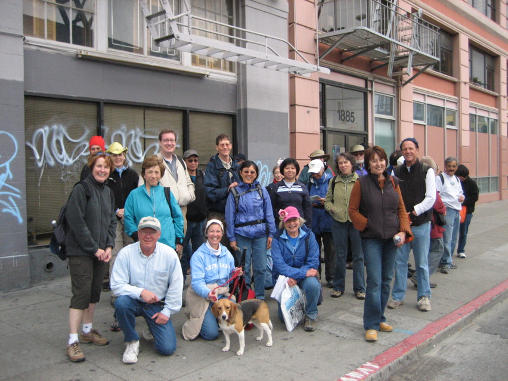

<--Previous Up Next-->

Mosaic hikers
Here's everyone who made it through eight hours of mosaic exploration to the bus stop at 15th & Mission. Huxley and Dave didn't join the group for the bus trip to the last stop on the hike, the new mall in the old Emporium building, because Hux has been there before, and Dave knows he'd have to carry Hux -- one solid little dog -- all the way through the mall.
Hike leader Jeanne Halpern is in the pink hat. Dave is in the red bus zone taking the picture, so it was a little rushed.